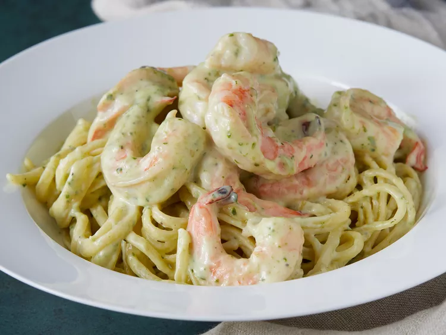

Creamy Pesto Shrimp

Ingredients:
- 1 lb shrimp, peeled and deveined
- 1 cup heavy cream
- 1/2 cup grated Parmesan cheese
- 1/4 cup fresh basil, chopped
- 2 cloves garlic, minced
- 2 tbsp olive oil
Instructions:
- In a large skillet, heat the olive oil over medium heat.
- Add the garlic and cook for 1 minute.
- Add the shrimp and cook until pink, about 3-4 minutes.
- Pour in the heavy cream and Parmesan cheese.
- Stir in the fresh basil and cook for another 2 minutes or until heated through.
Back to Recipes